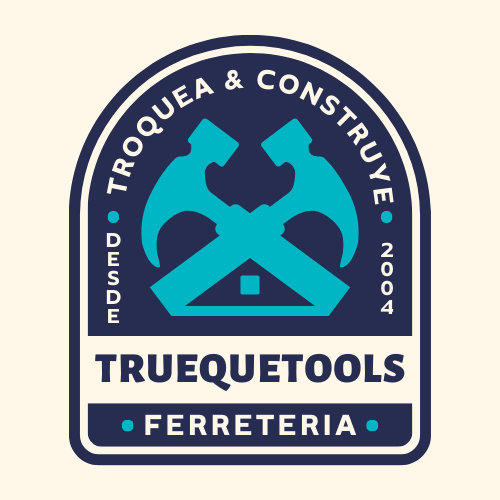

<nav class="navbar navbar-expand-lg bg-dark navbar-dark">
    <div class="container p-2 d-flex justify-content-between">
        
        <div class="d-flex align-items-center" style="gap: 8px;">
            
            <a class="navbar-brand fw-bold" href="{% url 'home' %}">TruequeTools</a>
        </div>

        <div class="">
            <form class="form-inline d-flex flex-row " action="{% url 'buscar_productos'%}" method="GET">
                <input class="form-control mr-sm-2 mx-2" type="text" placeholder="Buscar productos" name="cadena"/> 
                <button class="btn btn-primary my-2 my-sm-0" type="submit">Buscar</button>
            </form>
        </div>
        
        <div class="">
            <div class="collapse navbar-collapse " id="#navbarNavAltMarkup">
                <div class="navbar-nav ms-auto align-items-center" >

                    <a class="nav-link" href="{% url 'home' %}">Home</a>
                    <a class="nav-link" href="{% url 'productos' %}">Productos</a>

                    {% if user.is_authenticated %}
                    <a class="nav-link" href="{% url 'crear_producto' %}">Publicar producto</a>
                    <a class="nav-link" href="{% url 'logout' %}">Salir</a>

                    {% else %}
                    <a class="nav-link" href="{% url 'registro' %}">Registrarse</a>
                    <a class="nav-link" href="{% url 'ingreso' %}">Ingresar</a>
                    {% endif %}
                
                </div>
            </div>
        </div>


        {%comment%} 
            {# este botón iba originalmente en la navbar, al lado de la "brand", lo comenté porque solo aparece al achicar la pantalla, y ocupa espacio cuando todavía no lo usamos. Dejo acá por las dudas.#}
            <button class="navbar-toggler" type="button" data-bs-toggle="collapse" data-bs-target="#navbarNavAltMarkup" aria-controls="navbarNavAltMarkup" aria-expanded="false" aria-label="Toggle navigation">
                <span class="navbar-toggler-icon"></span>
            </button>
        {%endcomment%}

    </div>
</nav>